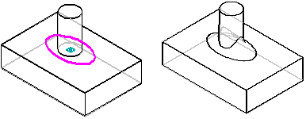
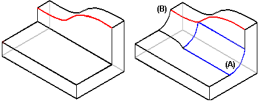
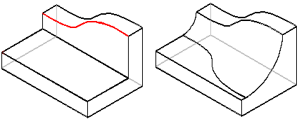

Tangent hold lines
In face-to-face blending, you can use a curve or edge to contain the blend. The tangent hold line must lie on one of the blending faces. When the blend encounters the hold line, the blend radius varies so that the blend surface rolls along the hold line and remains tangent to the face on which the hold line lies. You can define a tangent hold line for each of the input faces or for only one of the input faces.

When using tangent hold lines, you can define the blend radius the following ways:
-
Default radius
With the default radius option, the radius value you define is used wherever possible. However, if the blend overflows onto a tangent hold line, the blend radius is varied to maintain tangency with faces along the hold line. Notice in the next illustration that the surface (A) was created at the default since it did not interact with the specified hold line (B).

-
Full radius
With the full radius option, the faces and tangent hold lines define the blend radius. The blend is created so that the blend surface rolls along the tangent hold line at every point, varying the radius as necessary to maintain tangency between the faces.

How do I
Round part edgesEdit a synchronous round
Control the edit behavior of a synchronous round
Reorder rounded part edges
Blend part faces
Blend surface bodies
Construct a variable radius round
Learn more
Rounding and blendingEditing rounds
Rounding order
Rounding overflow options
How does blending work?
Defining the blend shape
Blends on surface bodies
Variable radius rounds
Look up more details
Round commandRound command bar (ordered)
Round command bar (synchronous)
Round Options dialog box
Round Parameters dialog box
Reorder Round command
Blend command
Blend command bar
Surface Blend Parameters dialog box